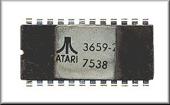
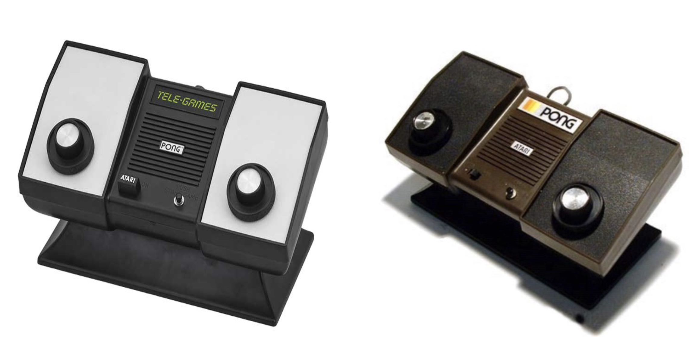
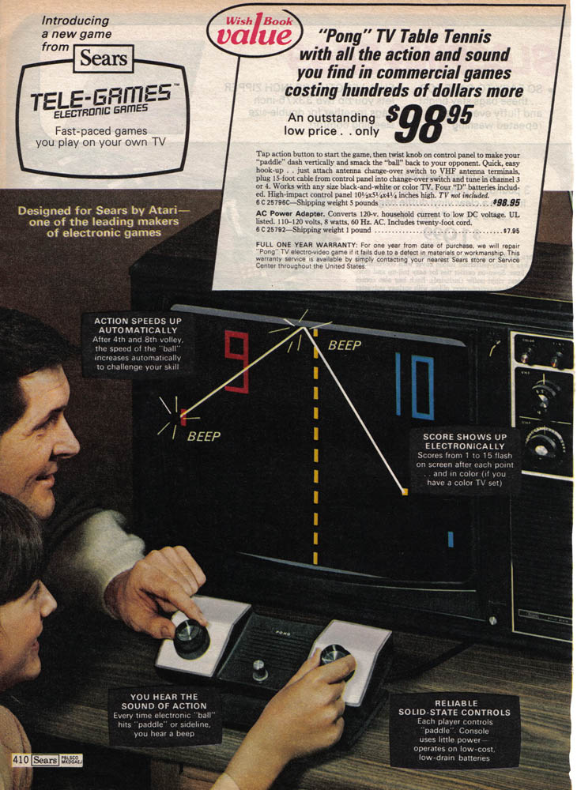
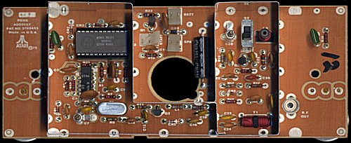
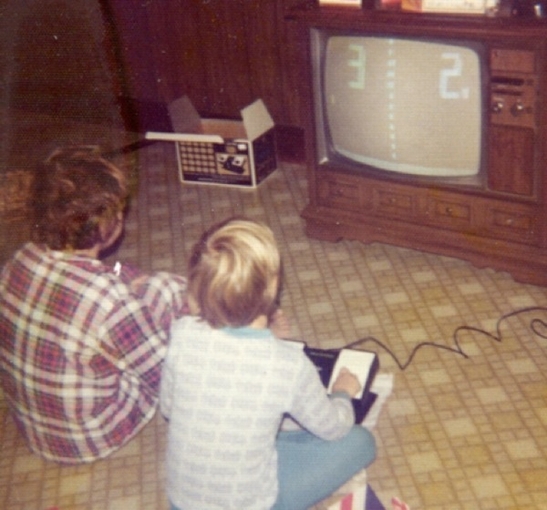

Home Pong
History
After the success of Pong, Atari decided to develop new products. So it was that in 1974, Harold Lee, Atari's engineer, proposed to produce a homemade version of "PONG". Lee worked with Alan Alcorn on the first projects, basing them on the digital technology used in their games. Lee worked on logic and design and Alcorn worked on debugging in the evenings. Later the team was joined by engineer Bob Brown who assisted them in the construction of the prototype. The prototype was a device attached to a pedestal full of wires, which was eventually replaced by a chip created in 1974 by Alcorn and Lee.

On August 3, 1975, Atari launched Home Pong, which consisted of a small console that could be connected to the TV and two knob controllers included in the console's shell. Atari presented its console to several toy retailers and electronics shops,

but no one was interested in the product because it was considered too expensive and of little interest. The asking price was about $100 (equivalent to over $400 nowadays). Atari set up a Home Pong stand at the American Toy Fair (a trade show) in New York again without success. Fortunately, the company was able to reach an agreement with Sears. For the Christmas period 1975, Sars 150'000 units and to satisfy this order Atari bought a new factory. The model was manufactured under the name "Tele-Games" by Sears. The console proved to be a great success: during the Christmas period of 1975 as many as 150,000 units were sold in the United States and it was the most commercialised item in the Sears catalogue that had requested exclusivity for the sale. In 1976 Atari released a version with its own brand.

Features
The console had one important feature: Alcorn and Lee made a single chip that calculated the score and provided an attractive sound. It was the highest performing chip used in a consumer product.


sources
- http://www.atarimuseum.com/videogames/dedicated/homepong.html
- https://spectrum.ieee.org/view-from-the-valley/tech-history/cyberspace/atari-alumni-talk-about-the-tall-tales-the-told
- https://www.metv.com/stories/the-atari-home-pong-console-is-40-years-old
- https://breakingtech.it/atari-pong-la-storia-dei-videogiochi/
- http://www.pong-story.com/atpong2.htm
- https://www.wikiwand.com/it/Storia_dei_videogiochi#/1972:_la_nascita_della_Atari
- https://en.wikipedia.org/wiki/Pong
- https://en.wikipedia.org/wiki/AY-3-8500
- https://en.wikipedia.org/wiki/Ted_Dabney
- https://en.wikipedia.org/wiki/Atari